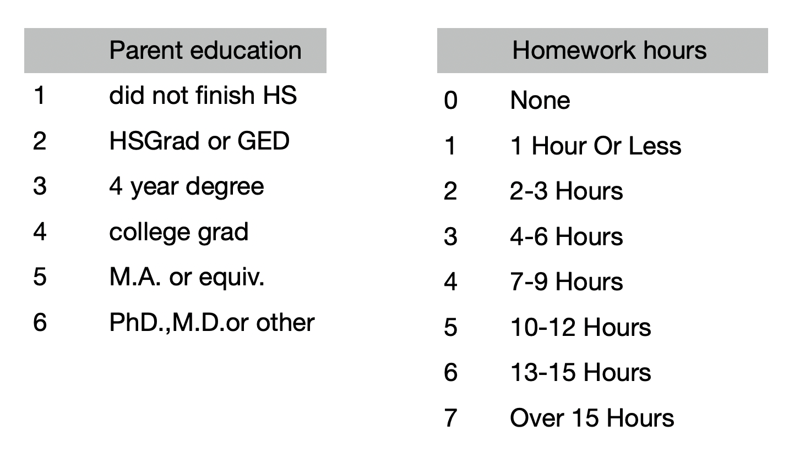
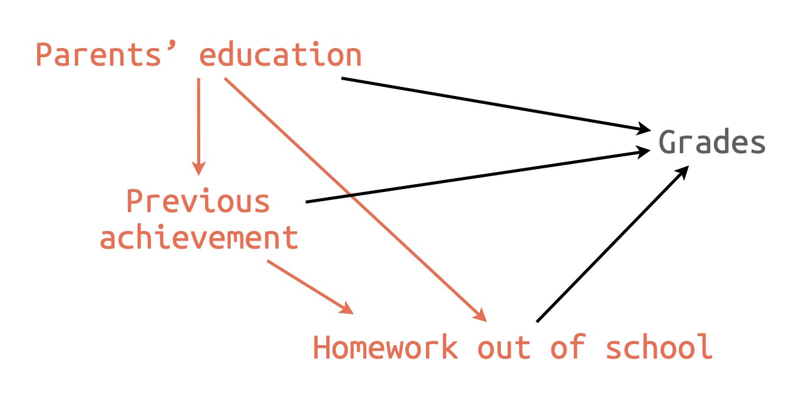

nels <- read_csv("data/nels88_sample.csv")
nels <- nels |>
select(grades = ffugrad, pared = bypared, hw_in = f1s36a1, hw_out = f1s36a2, prev = bytests)
nels
# summarize data
summary(nels)
# count values
nels |> count(pared)
nels |> count(hw_out)Case Study 3
Applied Multiple Regression/Correlation Analysis for the Behavioral Sciences by Jacob Cohen, Patricia Cohen, Stephen G. West, Leona S. Aiken
National Education Longitudinal Study of 1988 (NELS:88)
Source: p.69 in Multiple Regression and Beyond (3e) by Timothy Z. Keith

연구주제: 학생들의 과제는 성적에 영향을 주는가? 준다면 그 영향력의 크기는 어떠한가?
grades: 10학년의 성적 평균 in English, Math, Science, Social Studies.
pared: 부모의 교육 수준 (높은 쪽)
hw_in, hw_out: 10학년 때 학생들이 보고한 숙제하는데 보낸 주당 평균 시간 (in school or out of school)

변수들 간의 관계 탐색
code for ggpairs
trendlines <- function(data, mapping, ...){
ggplot(data = data, mapping = mapping) +
geom_point(alpha = .2) +
geom_smooth(method = loess, se = FALSE, color = "orange", ...) +
geom_smooth(method = lm, se = FALSE, color = "deepskyblue", ...)
}
ggpairs2 <- function(data, ...) {
GGally::ggpairs(data, lower = list(continuous = trendlines))
}ggpairs2(nels)세 개의 독립변수로 예측: Path Analysis(경로 분석)
B1. 인과모형 A: 부분 회귀 계수들


D: 표준화 계수 및 부분 상관 계수
E: 간접효과의 크기와 검증

변수의 추가: 4개의 독립변수로 예측
B2. 인과모형 B: 부분 회귀 계수들

F: 모형의 비교
G: 표준화 계수 및 부분 상관 계수
추가 분석
H: Howework에 영향을 주는 요소들 분석
